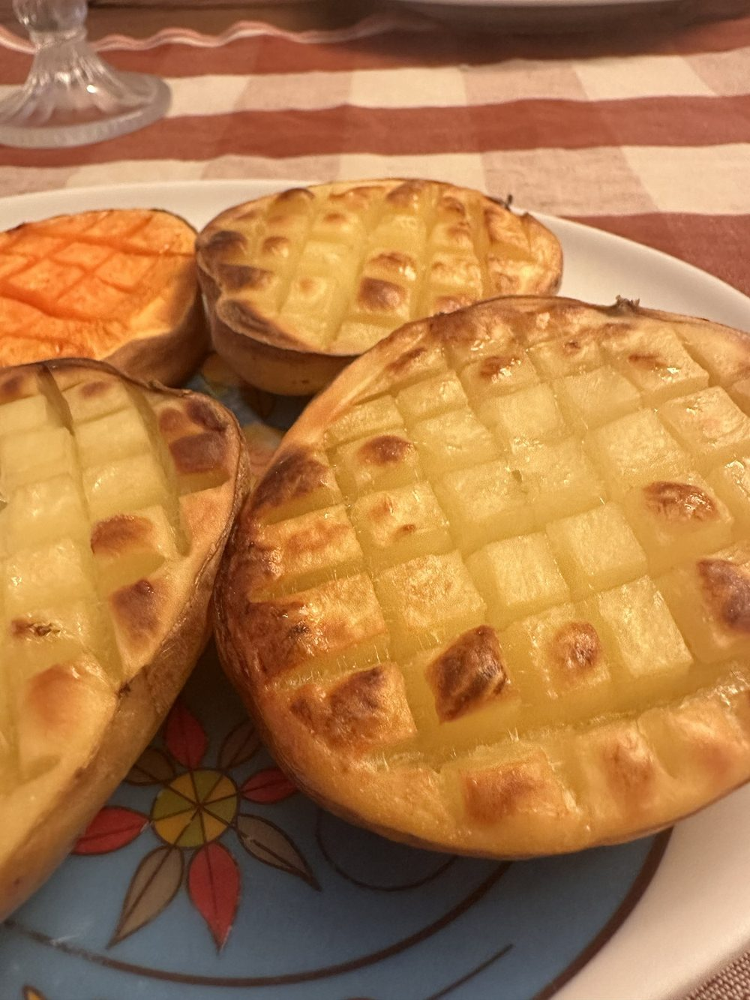

Comida tradicional
alicantina
‹ Todas las recetas
Patatas asadas

Ingredientes
Patatas
Boniato (opcional)
Sal
Aceite de oliva
Para servir: alioli y pimienta o pimentón (opcional)
Preparación
Precalentar el horno.
Ponerlo a
220 °C
.
Cortar las patatas.
Si son pequeñas,
por la mitad
. Si son muy grandes, en
rodajas de 2 cm
de grosor (salen unas tres por patata). Si hay algún
boniato
, se corta igual y se asa junto a las patatas: el tiempo de horno es parecido.
Hacer los cuadritos.
Con un cuchillo, marcar la cara cortada en
cuadrícula
, lo más profundo que se pueda.
Aliñar.
Echar
sal
y
aceite de oliva
por encima.
Al horno.
Poner la bandeja en uno de los
niveles de abajo
y dejar unos
40 minutos
.
Punto.
Están hechas cuando los
cuadrados empiezan a abrirse
, como en la foto.
Servir.
Se pueden acompañar con un
sobrecito de alioli
y un poco de
pimienta o pimentón
por encima.